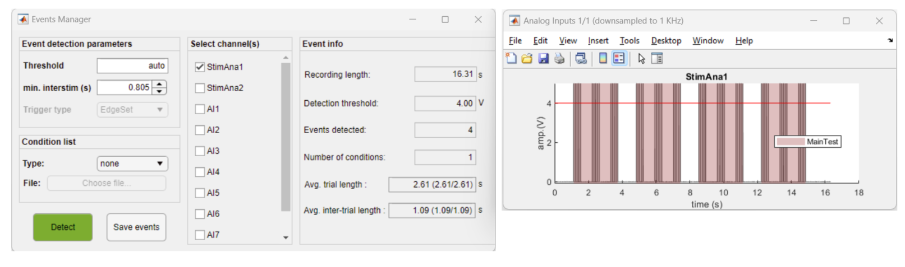
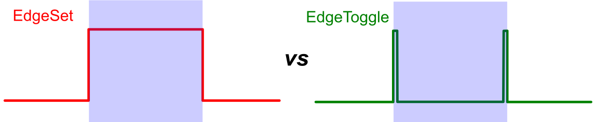
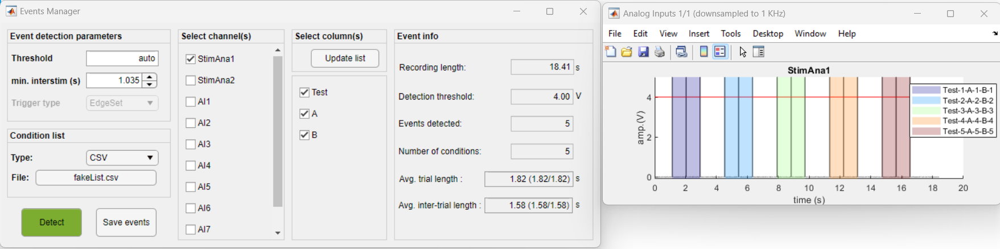

This tool is an Utility of the DataViewer app. The app is dedicated to the visualization and detection of events stored in the analog inputs from LabeoTech Imaging systems. It enables users to easily set the parameters for event detection either from internally generated events from the imaging platforms or from external sources such as TTL signals or photodiodes. Additionally, a list of event IDs stored in a .CSV or text file can be used to identify the detected events associated with different conditions. Finally, one can save the event information to an events.mat file, which can be used by some of the functions in umIT (e.g. split_data_by_event) to perform the analysis of event-triggered imaging data.

App's main interface (left) and analog input figure (right) showing the events detected (red shaded
areas)

To launch the tool, open the DataViewer app and go to Utilities >> Manage events. To access the Utilities menu, either open a .dat file (File >> Open) or import the raw data (File >> Import raw data... >> from LabeoTech system)
Tip
If you import the raw data, you can skip the event detection by setting the DetectEvents parameter to
No to save time. The app will read the analog data and create the events.mat file later
in the app.
The app will automatically open the the binary files (ai_0000x.bin) containing the analog signals. If the files are not found, you will be asked to select the folder containing the files. Once the files are read, the app interface will appear. The save folder where the events.mat file will be saved is the same from the opened .dat file.
Select one or more channels from the list in the Select channel(s). The list of channels is based on the content of the info.txt file.
Note
If two or more channels are selected, for each channel, the events detected will be automatically considered
as a condition, if no condition list is provided. For example, if there are events in the channels
StimAna1 and StimAna2, the events will have a total number of two conditions with names
StimAna1 and StimAna2.
This app provides a convenient feature for cases where the events detected are associated with multiple conditions. Users have the option to upload a .CSV file (or a text file from Vpixx-special case) that will be used to update the list of event names. This can be particularly useful when dealing with cases where there are different stimuli (i.e. conditions) presented in a random order.
Users can prepare a .CSV file that includes the event names listed in chronological order with each event name in a separate row. Upon uploading the file through the app's interface, the app will process the contents and update the event name list accordingly.
To upload a .CSV file:
The app will read the content of the .CSV file and update the event name list accordingly.
In cases where the .CSV file contains multiple columns, the utility app's graphical user interface (GUI) offers an additional panel to facilitate column selection. This feature allows users to choose the specific column(s) they want to include in the event name list.
By selecting two or more columns, the app concatenates the row values from each selected column to create unique event names. This functionality is particularly useful for users who have different combinations of parameters that form a unique condition. Additionally, if the .CSV file contains headers, those headers are automatically included in the generated event names. This ensures that the resulting event names accurately represent the parameters associated with each condition. Here is an example of a .CSV file containing three columns:
Here is the data in the .CSV file:
| Test | A | B |
|---|---|---|
| 1 | 1 | 1 |
| 2 | 2 | 2 |
| 3 | 3 | 3 |
| 4 | 4 | 4 |
| 5 | 5 | 5 |
And here is how it looks like when the data is loaded on the app:
To update the event names, just select the desired columns and click on the Update list button.
For users that utilize the Vpixx software (Vpixx Technologies) to create stimuli, the app provides the option to parse the .vpixx or .txt files generated by the Vpixx software and updates the event name list.
The procedure for updating event names using .vpixx or .txtfiles generated by the Vpixx software is the same as for CSV files with a single column.
Finally, once all events are detected and the event names are updated from the condition file, simply click on the Save events button to save the event information to the events.mat file. This file contains all the information necessary for the analysis of event-triggered imaging data.